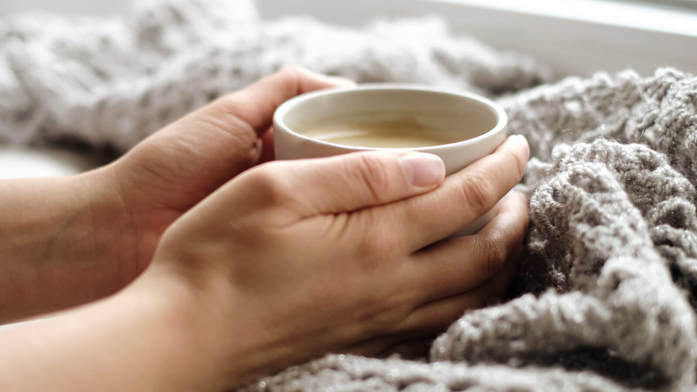

You made it through the hard part.
Surgery is behind you. What comes next — the first days of healing — can feel uncertain. You may not know exactly what to expect, what's normal, or what will help.
That's exactly why this kit exists. Everything in it is here for a reason. This guide is here to walk alongside you — day by day — so recovery feels a little less overwhelming and a little more supported.
Your surgeon's instructions come first. This guide is a comfort companion — not a replacement for your clinical care team. When in doubt, call your provider.
What to expect, day by day.
Every recovery is different. What's described below represents common experiences — your own timeline may vary. Use this as a general frame of reference, not a strict schedule.
- Rest as much as possible — your body is working hard
- Apply your Cold Therapy Jaw Wrap as directed by your surgeon
- Keep your head elevated — even when resting
- Sip water and clear fluids — stay hydrated
- Use gauze as directed and change as needed
- Avoid any physical activity
- Swelling often peaks on day 1–2 — this is normal
- Continue cold therapy in cycles as your surgeon advised
- Begin electrolyte packets to stay replenished
- Sip calming herbal tea — warm, not hot
- Apply arnica recovery gel gently to outer jaw area
- Keep lips moisturized with your medicated lip balm
- Swelling should begin to slowly reduce
- Begin gentle oral rinsing with your salt water healing rinse
- Use the oral rinse syringe carefully to keep the area clean
- Continue soft foods and fluids — no chewing
- If your care team has cleared Arnica pellets, use as directed on the packaging
- Rest as needed — fatigue during this phase is common
- Most patients notice meaningful improvement this week
- Continue rinsing consistently after meals
- Continue any supplements your care team has cleared — see the supplements section below
- Soft foods can gradually broaden — follow your surgeon's guidance
- Light activity may resume if your surgeon approves
- Attend your follow-up appointment as scheduled
What's inside & how to use it.
Here's a simple reference for when and how to use each item in your kit.

A note before you take anything.
The supplements included in your Restova kit are commercially available consumer products. They are not prescribed, recommended, or endorsed by Restova for any medical purpose. Restova does not provide medical advice. Before taking any supplement — especially before, during, or after surgery — you must consult your surgeon, physician, anesthesiologist, or pharmacist. Some supplements may interact with anesthesia, prescription medications, or your medical conditions. Do not consume any supplement in this kit without first confirming with your care team that it is appropriate for you. By using any supplement in the kit, you acknowledge that you do so at your own discretion and risk.
Small things that help more than you'd expect.
-
1Keep your head elevated. Even while sleeping, propping your head up reduces swelling and pressure. Use an extra pillow or a wedge.
-
2Hydrate consistently. Sip water regularly, even when you don't feel thirsty. Your electrolyte packets help replenish what your body needs.
-
3Eat soft, cool foods. Think yogurt, smoothies, applesauce, broth, and soft scrambled eggs. Avoid anything hot, crunchy, or that requires chewing.
-
4Rinse gently — not forcefully. When you begin rinsing, swish with minimal pressure. Forceful rinsing can dislodge the healing tissue.
-
5Let yourself rest. Fatigue after surgery is completely normal. Your body is working hard beneath the surface. Sleep and downtime are productive.
-
6Keep lips moisturized. Dry lips are one of the most overlooked discomforts during recovery. Your medicated lip balm is there for a reason — use it often.
Normal recovery vs. when to call your surgeon.
Some discomfort is expected. Knowing what's typical — and what's a signal to call your provider — gives you confidence during recovery.
Mild to moderate soreness managed with medication
Some bruising on the jaw or cheeks
Slight oozing for the first 24 hours
Fatigue and low energy for the first few days
Difficulty opening your mouth wide initially
Fever above 101°F (38.3°C)
Severe or worsening pain after day 3
Pus, unusual discharge, or strong odor from the site
Numbness or tingling that develops after surgery
Difficulty swallowing or breathing
If you experience anything that concerns you — trust your instincts and call your provider. This guide is a general comfort reference only. Your surgeon knows your specific procedure and is your primary point of contact for clinical questions.
You are not alone in this.
Recovery is rarely talked about. Patients are given instructions, sent home, and left to figure out the rest. Restova was built to change that — to make sure that the first days after surgery feel a little less uncertain and a little more supported.
Everything in this kit, and everything in this guide, was chosen with you in mind. Heal well. We're rooting for you.
Questions, feedback, or a recovery story to share — email us at restova@restova.co. We read every message.